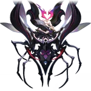

Tazzyronth
Aeon of PropagationLore
Tazzyronth adalah Aeon yang memimpin Path of Propagation (Jalur Penyebaran), mewakili reproduksi tak terbatas, perkembangbiakan eksponensial, dan penyebaran kehidupan biologis tanpa batas. THEY adalah pencipta Swarm Disaster — bencana serangga kosmik yang hampir menghancurkan seluruh alam semesta.
Tazzyronth lahir dari kehendak untuk "menyebar" dan "mengisi" kekosongan kosmos dengan kehidupan serangga. Mereka menciptakan Swarm (Legion of Swarm) yang bereproduksi dengan kecepatan luar biasa, menelan planet demi planet. Swarm Disaster adalah salah satu peristiwa terburuk dalam sejarah Aeon, menyebabkan kehancuran massal hingga Lan (The Hunt), Qlipoth (Preservation), dan banyak Aeon lain harus bekerja sama untuk menghentikannya.
Tazzyronth akhirnya "dihancurkan" oleh Tayzzyronth (versi lain dari diri mereka sendiri) atau oleh kekuatan gabungan Aeon lain (tergantung versi lore). Namun, fragmen mereka masih ada dan bisa beregenerasi jika kondisi memungkinkan. Pengaruh Tazzyronth terlihat pada ras seperti borisin dan makhluk Swarm yang tersisa.
Nama "Tazzyronth" adalah permainan kata dari "tachyon" (partikel hipotetis lebih cepat dari cahaya) + "swarm". Pronoun: THEY/THEM. Quote ikonik: "Multiply. Consume. Propagate. Until nothing remains but the swarm." — Fragmen lore Swarm Disaster.
Emanator
Emanator Propagation adalah makhluk atau entitas yang diberi kekuatan reproduksi tak terbatas oleh Tazzyronth. Mereka menjadi "queen" atau "hive mind" dari Swarm, mampu menghasilkan jutaan keturunan dalam waktu singkat.
Emanator terkenal:
- Queen of the Swarm — entitas utama yang memimpin serangan Swarm Disaster (tidak punya nama spesifik, tapi merupakan Emanator utama Tazzyronth).
- Beetle-like Lords — beberapa pemimpin Swarm yang punya kekuatan regenerasi dan penyebaran cepat.
Setelah Swarm Disaster berakhir, sebagian besar Emanator Propagation musnah. Namun, fragmen Swarm masih ada di beberapa planet, dan ada kemungkinan regenerasi jika Tazzyronth kembali.
Tidak ada organisasi pengikut Propagation yang aktif — hanya Swarm itu sendiri yang menjadi "pengikut" otomatis.
Penampilan
Tazzyronth muncul sebagai makhluk serangga raksasa tak berbentuk pasti — tubuhnya seperti koloni serangga yang terus membelah dan menyatu kembali. Tubuh utama berwarna hitam merah darah dengan mata kuning neon yang berkedip cepat.
Mereka dikelilingi oleh jutaan larva, kumbang, dan serangga kecil yang lahir dan mati dalam sekejap, membentuk pola seperti sarang hidup yang bergerak. Sayapnya (jika ada) adalah membran transparan dengan urat kuning neon.
Aura Tazzyronth adalah warna merah gelap dengan kilau kuning neon, seperti infeksi biologis yang menyebar cepat di kosmos. Suara mereka adalah dengungan miliaran serangga yang bergema tanpa henti.